Sprawl & Resilience (Undergraduate Thesis, 2022)
“News of a human developer surveying the area has shaken the woodland creatures and native plant life. The forest has destabilized and there is chaos among its residents. Can the Woodland Creatures work together in order to combat the impending development?”
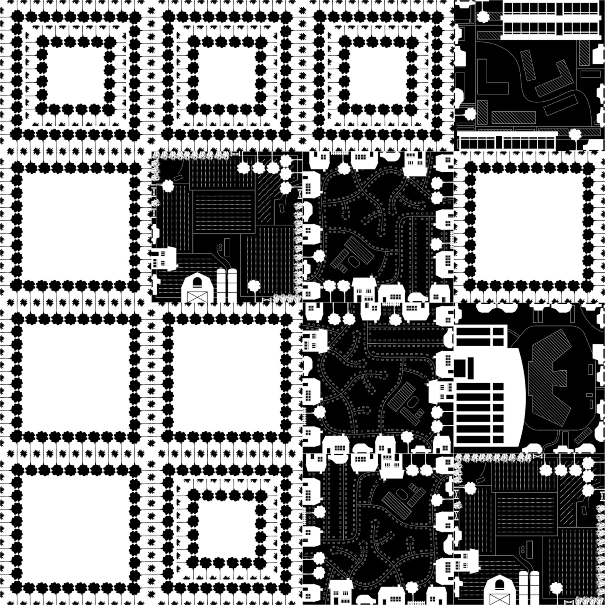
This project looks to generate a critique of the suburb within the minds
of its residents, challenging the attitude of growth that enables suburban
sprawl and giving a voice to non-human residents of pre-developed land.
The suburban landscape is vast and growing; a single spatial intervention
would not impact a significant amount of suburbanites. Thus, the project
materializes itself as a living room board game where players work together
and compete to restrain suburban development over the board. Transforming
their mindset in the span of a few hours is impossible, so this project
positions itself as a platform to catalyze the imagination of collective
thoughts.
The board game takes place in a soon-to-be developed land on the outskirts
of American Suburbia. The game’s gameplay is asymmetrical, meaning that
each team has differing gameplay styles that begin to determine their
power, action, and strategy.
BACKGROUND
This thesis was born out of my own life experience. My childhood took place in the suburbs south of Cleveland, Ohio, USA and it was there that I gained first-hand experiences of this urban form. But I, much like the majority of people living there, was clueless to the troubles I was inadvertently a part of. It should be noted that no single person is responsible for any of the problems of suburbia. Placing blame on individuals (aside from those who have great power and money) is unhelpful and irrelevant. These problems are something of a wicked nature, where change must be made collectively.
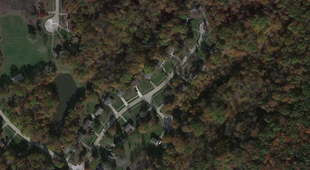While the image of suburbia as we know it began in the late 1940s, its roots can be traced much earlier, namely to the Palace of Versailles. French King Louis XIV’s magnificent show of wealth determined, more than anything else, the quality of the suburban landscape. Versailles’ vast and well-kept lawns, and those at the end of a cul-de-sac may be very different in scale, but both ultimately are a physical manifestation of wealth. The lawn is a visage into American culture and belief. Diller + Scofidio’s The American Lawn: Surface of Everyday Life(1998) “reveals the lawn as a domestic symbol, civic showplace, economic force, and national icon.” The showcasing of lawn-keeping machinery, various types of turf, and reverent depictions of lawn archetypes, a revelation of both respect and irony are created. The curated showmanship of an individual’s lawn lets you understand a lot about them and, on a larger scale, becomes representative of many dimensions of American life.
| 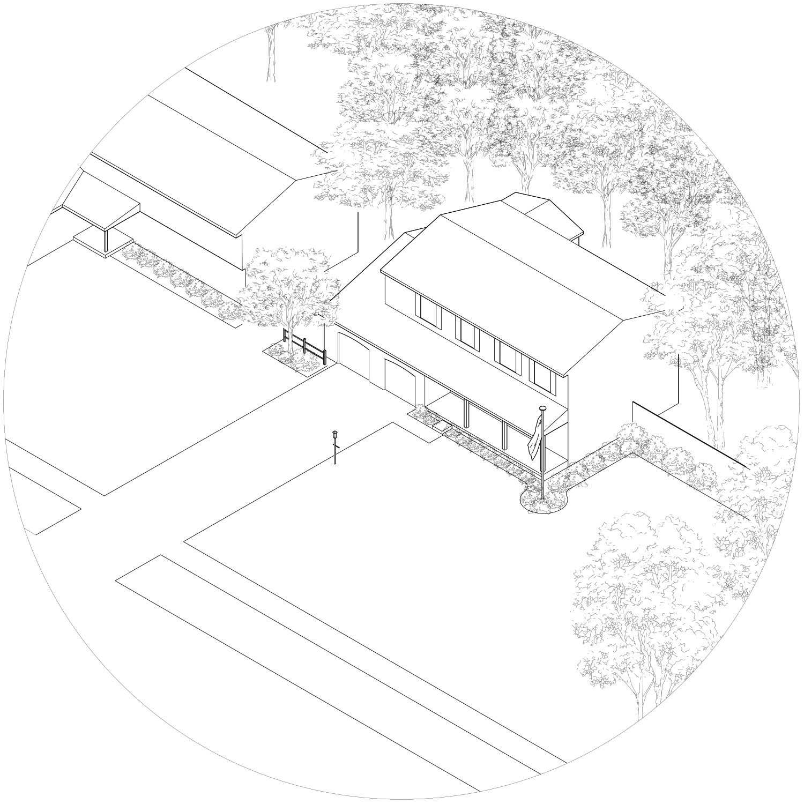 |
The lawn is the driving force of spatial use in the suburban landscape. A lawn more curated than its neighbors shows who’s the wealthiest on the street. It’s a social game that requires a massive amount of space where playing is the only option. Suburbanites’ desires for their own personal Garden of Versailles maintains the market for this extremely sparse living, and demand continues to grow. Suburban homes, such as those I grew up in, are isolated from one another. With an average of 2,300 square feet (213 square meters) in 2020, American homes are big for the average of 2.6 people that reside in them. Villas, such as these, are found across the entire suburban landscape. I speculate that this separation of individuals and families leads to psychological issues that have arisen in the past decades. Micro-cultures form within family units and emotional-social-support systems are often not present in children and adolescents’ lives. While this has not yet been examined academically, the lack of cooperative and social lives is astounding.
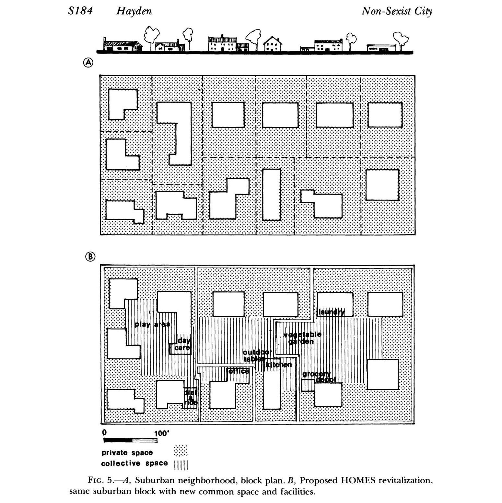Soon-to-be felled forests make way for enormous infrastructure projects, housing developments, and retail districts shaping the foundations of mine and other suburbanites’ behaviors. Reliance on automobiles and lack of proper walkable places, even towards the urban center of Cleveland is assumed and not interrogated for many, well-documented reasons. Firstly, automobiles, their quality, and the individual’s upkeep of them are a sign of wealth. Automobiles, like lawns and many other things, are a part of the cultural theatrics that Americans take part in. Secondly, there is a lack of extensive, reliable public transportation. This is partly due to the previously mentioned question of wealth: public transportation in many parts of the country is seen as welfare. See below for the Strongsville, Ohio mall and the size of the parking lot that services it.
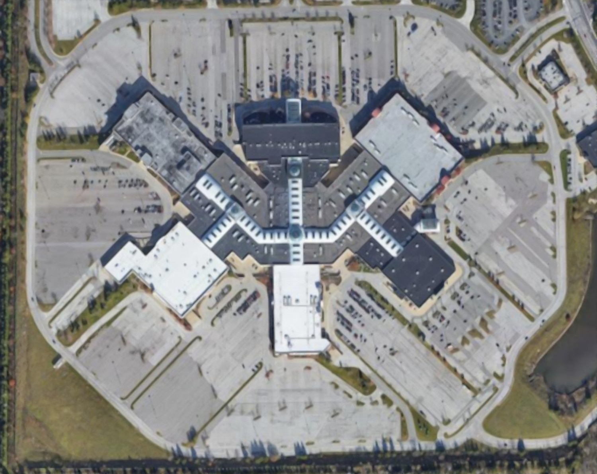To me, suburbanites’ connections to the natural world is the only real amenity that one may not find as accessible anywhere else. Where present, parks and nature reserves serve as a quiet respite from busy life. But even this comes at the cost of the natural world’s commodification; in the eyes of Mother Nature, it is a selfish act to divide forests with innumerable roads and trails for human enjoyment. Forests and lakes, previously undisturbed places, become spots of recreation for those who can afford to make the trip to them and infrastructure facilitating transportation and recreation are quickly created to take advantage of their capital gain. The human landscape is now dominating the natural landscape so much that nature, as we conceptualize it, is now manmade.
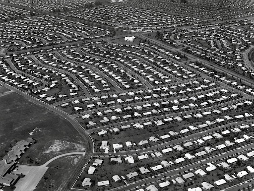As someone who grew up in the suburbs and has experienced less resource-intensive ways of living since, I have begun to understand both the advantages and disadvantages, costs and privileges that come with living in an American suburb. From experience and further research, this thesis became an attempt to reveal underlying socio-political tensions of the suburban landscape and to remind suburbanites that our friends in the natural world exist, even as we seek to conform their habitats to our own.
SYNTHESIS
The problems discussed above are not easy to solve. Habits are grounded in cultural belief and foundational understanding and quick changes to such things across so many people is impossible. Change must come slowly and as a collective. The vastness of the suburban landscape poses an interesting problem for an architecture student: how could a single structure conveying these ideals reach a target audience spread across thousands of miles? Architecture is typically built in one place and serves the community surrounding it. A static structure is clearly not the correct choice. The medium must be something that could travel place to place. A mobile medium that reaches those who might not encounter these ideas otherwise. A direct description might appear as a method of challenging beliefs rather than simply sharing alternative beliefs. Thus, the thesis becomes a board game. Mechanics and rules of board games act as a platform for players to role-play, embody and learn together.
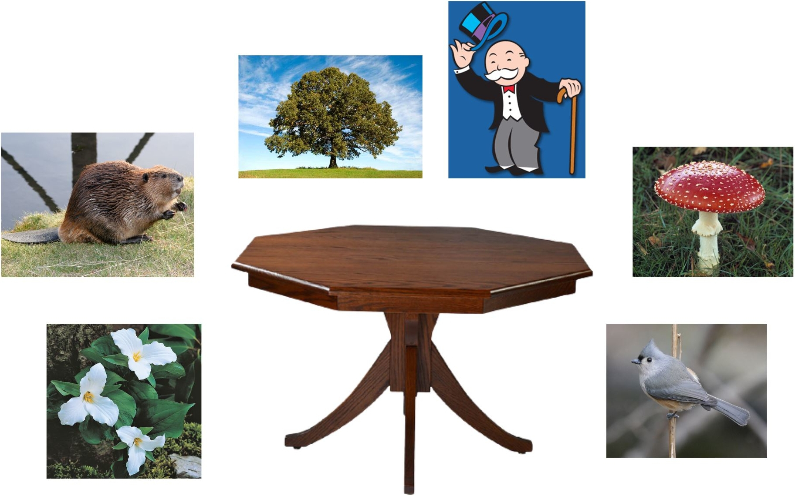This thesis chose to focus on the issues regarding the devaluation of the natural world. Suburban development continues to expand outwards, covering forests, fields, and other habitats with single-family homes and asphalt. In light of the ever-increasing issues of climate change and biodiversity loss, suburban development and its lifestyle are becoming increasingly negative. The protagonists of the game are the Woodland Creatures of the natural world. In light of their habitat destruction, they must face evil and work together in order to come out alive. In any good narrative, a well-rounded villain and antagonist is absolutely necessary to drive a conflict. The thesis’s villain is the Developer: a wealthy individual in the suburbs that represents and embodies the issues of suburbia. The Developer and the Woodland Creatures struggle for territory on the board, and power dynamics and imbalances between the two parties arise.
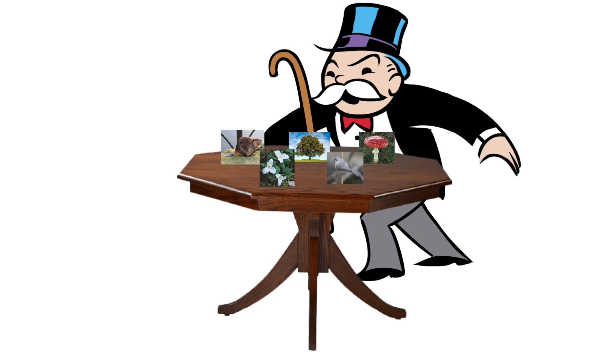The mechanics of the game give far more power to the Developer than to the Woodland Creatures. It is intended that as players sit around a table together, a social dynamic arises where the few (the Developer) have the majority of the power in changing the board state and the many (the Woodland Creatures) must rapidly adapt their actions to combat impending decisions and strategies.
| 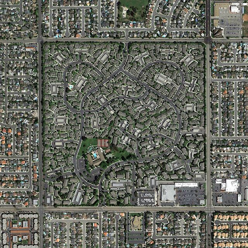 | 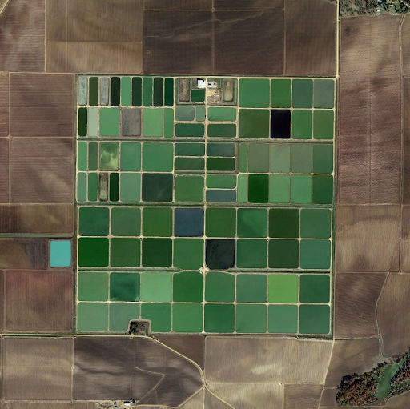 | 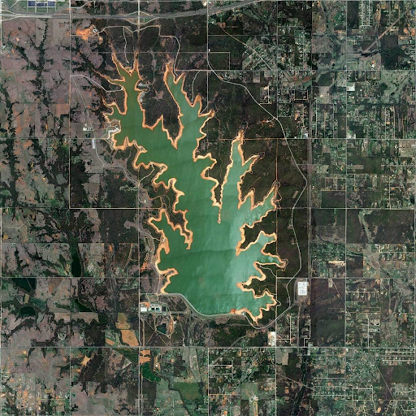 |
Fortunately, the step of creating a dynamic board grounded in reality had unexpected historical precedent the thesis could draw from. In 1785 and to circumvent issues of change in the natural world, Thomas Jefferson proposed that sale and surveying of land in the United States, despite most natural boundaries, be fit to a grid. Jefferson’s method is still in use and these square mile plots of land are clearly visible from an aerial view. The grid’s disregard for the boundaries, habitats, and wildlife of the land set a standard for American living that is still evident in midsets today. The Jefferson Grid, well-documented by artist and photographer Shabtai Panchevshy, serves as a tile system from which the board game thesis took advantage of. The board became a 14in by 14in square, poised for a possible 16 square mile tiles of development.
OUTCOME
This thesis manifests itself as an asymmetrical board game where the Woodland Creatures and the Developer have a power struggle over a portion of land. The Woodland Creatures, consisting of up to 5 players, fill the roles of native flora and fauna and are powerless on their own. Only through collaboration, communication, and synergizing of character-specific abilities, can begin to have real impact on the board. The Developer, a one player team, makes broad strokes through the process of development. Her gameplay, known as engine building, consists of a positive feedback loop between capital investments and income.
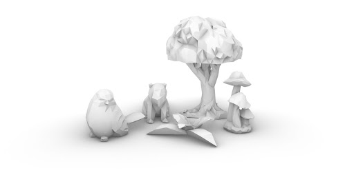On the board, the Woodland Creatures are represented as figurines, open and readily affected by changes in the board state. The Woodland Creatures work together in order to halt the impending development and make the forests resilient. Their gameplay style is all about adapting to change as a team, making decisions together that best fits their collective win-condition. The Developer, on the other hand, is not represented on the board. The player embodies the Developer character, physically representing the idea of the top-down vision of a suburban developer. The Developer works solo, making decisions based on his or her current and projected income, trying to maximize profit while working around the cooperative efforts of the Woodland Creatures. She spends time each turn awarding his or herself capital income, making moves to develop, laughing maniacally, and bathing in her power.
The actions and relationships between players constructs tensions between the Developer and the Woodland Residents. The constructed dynamic that arises from one player with lots of power vs many with not small amounts becomes contradictory to the physical presence the players have when seated when around the table. This designed experience highlights the inequalities that arise from classes, power struggles, and erasure. The Woodland Creatures are influenced to use practices of commoning to combat the imbalances they face from the other side of the board.
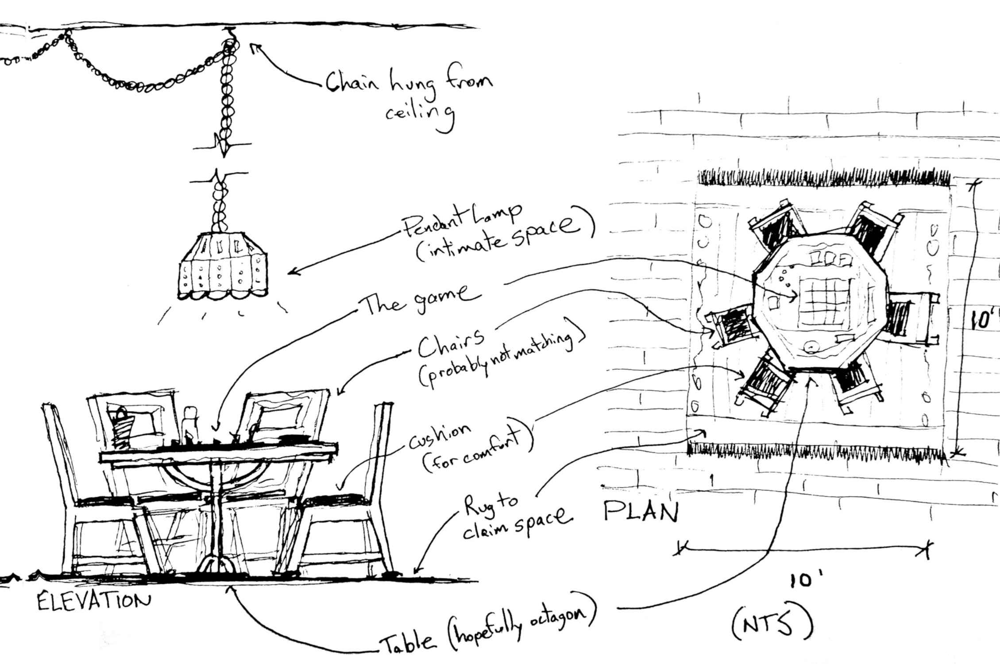The thesis and board game were fortunate enough to be exhibited in the 2022 Carnegie Mellon University School of Architecture Symposium, where many took part in learning the rules and playing. The social dynamic between teams did arise. It was exciting to discuss and learn from this experience as problems regarding replayability of the board game were brought to light. I learned that if the game was to become a widespread, accessible critique of the suburbs, some changes would need to be made.
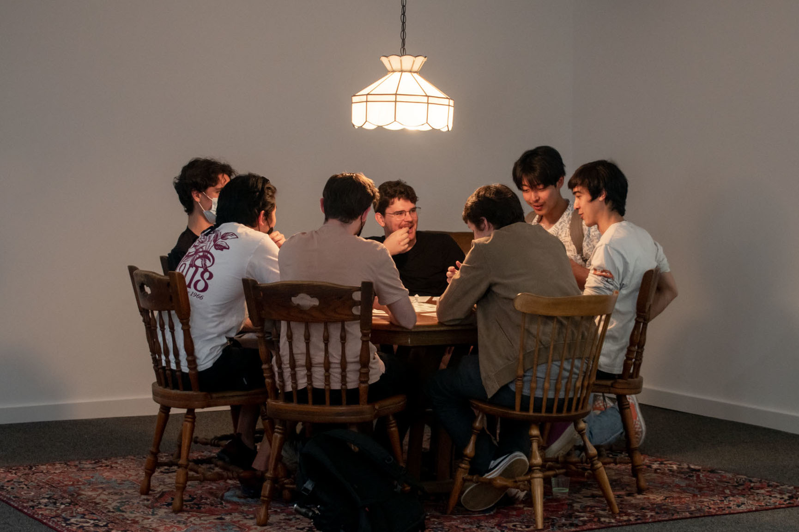